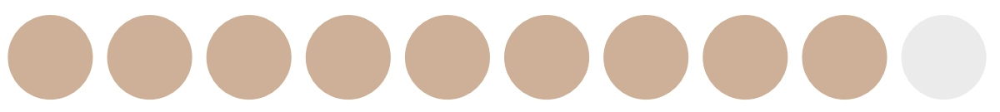

Herzlich Willkommen!
Mein Name ist Debora Walker und ich bin 31 Jahre alt. Schon in meiner Kindheit entdeckte ich die Leidenschaft zum Kreativen. Die Schönheit der Natur, Kunst und Architektur inspirierten mich früh zum Zeichnen, Malen, Fotografieren und Musizieren.
Im Februar 2021 wurde ich Mutter und reduzierte meine Arbeitstätigkeit, um mein Kind zu pflegen. Mein Sohn erweckte einen in mir schlummernden Kindheitstraum, Kindergarten-Lehrerin zu werden, wieder. Ich absolvierte begeistert den Vorbereitungskurs an der Pädagogischen Hochschule in Schwyz und bestand die Aufnahmeprüfungen. Da ich mir das Studium, die Praxis und den benötigten Aufwand dafür anders vorstellte, exmatrikulierte ich kurz nach Beginn.
Heute ist mein Sohn fünf Jahre alt und besucht den ersten Kindergarten. Diese kinderlose Zeit würde ich gerne wieder effektiver und kreativer nutzen.
076 726 52 60 | deborawalker_work@outlook.com
Deutsch

Englisch
Französisch
Italienisch